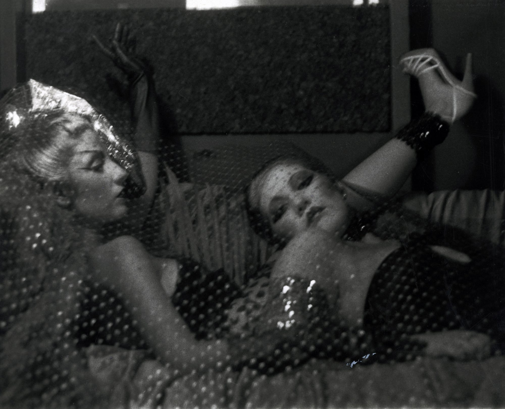

Patssi Valdez, Portrait of Sylvia Delgado, c. early 1980s. Hand-painted photograph with ink and pastel, 20 x 36 in. (50.8 x 91.4 cm). Collection of Joel Wachs.
Photo by Ian Byers-Gamber.
Patssi Valdez, Reclining (Betty Salas and Gloria), c. early 1980s. Black-and-white photograph, 8 x 10 in.
(20.3 x 25.4 cm). Courtesy of Patssi Valdez.
Asco, Á La Mode, 1976, photograph by Harry Gamboa Jr., courtesy of the UCLA Chicano Studies Research Center (CSRC) Library, from the collection of Patssi Valdez, © 1976 Asco/Photograph Harry Gamboa Jr.